- 01 第一堂“云原生”课.md.html
- 02 容器基本概念.md.html
- 03 Kubernetes 核心概念.md.html
- 04 理解 Pod 和容器设计模式.md.html
- 05 应用编排与管理：核心原理.md.html
- 06 应用编排与管理.md.html
- 07 应用编排与管理：Job & DaemonSet.md.html
- 08 应用配置管理.md.html
- 09 应用存储和持久化数据卷：核心知识.md.html
- 10 应用存储和持久化数据卷：存储快照与拓扑调度(至天).md.html
- 11 可观测性：你的应用健康吗？（莫源）.md.html
- 12 可观测性-监控与日志（莫源）.md.html
- 13 Kubernetes 网络概念及策略控制（叶磊）.md.html
- 14 Kubernetes Service（溪恒）.md.html
- 15 从 0 开始创作云原生应用（殷达）.md.html
- 16 深入解析 Linux 容器（华敏）.md.html
14 Kubernetes Service（溪恒）
需求来源
为什么需要服务发现
在 K8s 集群里面会通过 pod 去部署应用，与传统的应用部署不同，传统应用部署在给定的机器上面去部署，我们知道怎么去调用别的机器的 IP 地址。但是在 K8s 集群里面应用是通过 pod 去部署的， 而 pod 生命周期是短暂的。在 pod 的生命周期过程中，比如它创建或销毁，它的 IP 地址都会发生变化，这样就不能使用传统的部署方式，不能指定 IP 去访问指定的应用。
另外在 K8s 的应用部署里，之前虽然学习了 deployment 的应用部署模式，但还是需要创建一个 pod 组，然后这些 pod 组需要提供一个统一的访问入口，以及怎么去控制流量负载均衡到这个组里面。比如说测试环境、预发环境和线上环境，其实在部署的过程中需要保持同样的一个部署模板以及访问方式。因为这样就可以用同一套应用的模板在不同的环境中直接发布。
Service：Kubernetes 中的服务返现与负载均衡
最后应用服务需要暴露到外部去访问，需要提供给外部的用户去调用的。我们上节了解到 pod 的网络跟机器不是同一个段的网络，那怎么让 pod 网络暴露到去给外部访问呢？这时就需要服务发现。
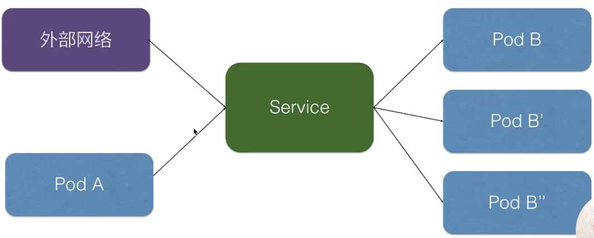
在 K8s 里面，服务发现与负载均衡就是 K8s Service。上图就是在 K8s 里 Service 的架构，K8s Service 向上提供了外部网络以及 pod 网络的访问，即外部网络可以通过 service 去访问，pod 网络也可以通过 K8s Service 去访问。
向下，K8s 对接了另外一组 pod，即可以通过 K8s Service 的方式去负载均衡到一组 pod 上面去，这样相当于解决了前面所说的复发性问题，或者提供了统一的访问入口去做服务发现，然后又可以给外部网络访问，解决不同的 pod 之间的访问，提供统一的访问地址。
用例解读
下面进行实际的一个用例解读，看 pod K8s 的 service 要怎么去声明、怎么去使用？
Service 语法
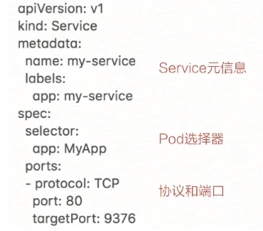
首先来看 K8s Service 的一个语法，上图实际就是 K8s 的一个声明结构。这个结构里有很多语法，跟之前所介绍的 K8s 的一些标准对象有很多相似之处。比如说标签 label 去做一些选择、selector 去做一些选择、label 去声明它的一些 label 标签等。
这里有一个新的知识点，就是定义了用于 K8s Service 服务发现的一个协议以及端口。继续来看这个模板，声明了一个名叫 my-service 的一个 K8s Service，它有一个 app:my-service 的 label，它选择了 app:MyApp 这样一个 label 的 pod 作为它的后端。
最后是定义的服务发现的协议以及端口，这个示例中我们定义的是 TCP 协议，端口是 80，目的端口是 9376，效果是访问到这个 service 80 端口会被路由到后端的 targetPort，就是只要访问到这个 service 80 端口的都会负载均衡到后端 app：MyApp 这种 label 的 pod 的 9376 端口。
创建和查看 Service
如何去创建刚才声明的这个 service 对象，以及它创建之后是什么样的效果呢？通过简单的命令：
- kubectl apply -f service.yaml
或者是
- kubectl created -f service.yaml
上面的命令可以简单地去创建这样一个 service。创建好之后，可以通过：
- kubectl discribe service
去查看 service 创建之后的一个结果。
service 创建好之后，你可以看到它的名字是 my-service。Namespace、Label、Selector 这些都跟我们之前声明的一样，这里声明完之后会生成一个 IP 地址，这个 IP 地址就是 service 的 IP 地址，这个 IP 地址在集群里面可以被其它 pod 所访问，相当于通过这个 IP 地址提供了统一的一个 pod 的访问入口，以及服务发现。
这里还有一个 Endpoints 的属性，就是我们通过 Endpoints 可以看到：通过前面所声明的 selector 去选择了哪些 pod？以及这些 pod 都是什么样一个状态？比如说通过 selector，我们看到它选择了这些 pod 的一个 IP，以及这些 pod 所声明的 targetPort 的一个端口。
实际的架构如上图所示。在 service 创建之后，它会在集群里面创建一个虚拟的 IP 地址以及端口，在集群里，所有的 pod 和 node 都可以通过这样一个 IP 地址和端口去访问到这个 service。这个 service 会把它选择的 pod 及其 IP 地址都挂载到后端。这样通过 service 的 IP 地址访问时，就可以负载均衡到后端这些 pod 上面去。
当 pod 的生命周期有变化时，比如说其中一个 pod 销毁，service 就会自动从后端摘除这个 pod。这样实现了：就算 pod 的生命周期有变化，它访问的端点是不会发生变化的。
集群内访问 Service
在集群里面，其他 pod 要怎么访问到我们所创建的这个 service 呢？有三种方式：
- 首先我们可以通过 service 的虚拟 IP 去访问，比如说刚创建的 my-service 这个服务，通过 kubectl get svc 或者 kubectl discribe service 都可以看到它的虚拟 IP 地址是 172.29.3.27，端口是 80，然后就可以通过这个虚拟 IP 及端口在 pod 里面直接访问到这个 service 的地址。
- 第二种方式直接访问服务名，依靠 DNS 解析，就是同一个 namespace 里 pod 可以直接通过 service 的名字去访问到刚才所声明的这个 service。不同的 namespace 里面，我们可以通过 service 名字加“.”，然后加 service 所在的哪个 namespace 去访问这个 service，例如我们直接用 curl 去访问，就是 my-service:80 就可以访问到这个 service。
- 第三种是通过环境变量访问，在同一个 namespace 里的 pod 启动时，K8s 会把 service 的一些 IP 地址、端口，以及一些简单的配置，通过环境变量的方式放到 K8s 的 pod 里面。在 K8s pod 的容器启动之后，通过读取系统的环境变量比读取到 namespace 里面其他 service 配置的一个地址，或者是它的端口号等等。比如在集群的某一个 pod 里面，可以直接通过 curl $ 取到一个环境变量的值，比如取到 MYSERVICESERVICEHOST 就是它的一个 IP 地址，MYSERVICE 就是刚才我们声明的 MYSERVICE，SERVICEPORT 就是它的端口号，这样也可以请求到集群里面的 MY_SERVICE 这个 service。
Headless Service
service 有一个特别的形态就是 Headless Service。service 创建的时候可以指定 clusterIP:None，告诉 K8s 说我不需要 clusterIP（就是刚才所说的集群里面的一个虚拟 IP），然后 K8s 就不会分配给这个 service 一个虚拟 IP 地址，它没有虚拟 IP 地址怎么做到负载均衡以及统一的访问入口呢？
它是这样来操作的：pod 可以直接通过 service_name 用 DNS 的方式解析到所有后端 pod 的 IP 地址，通过 DNS 的 A 记录的方式会解析到所有后端的 Pod 的地址，由客户端选择一个后端的 IP 地址，这个 A 记录会随着 pod 的生命周期变化，返回的 A 记录列表也发生变化，这样就要求客户端应用要从 A 记录把所有 DNS 返回到 A 记录的列表里面 IP 地址中，客户端自己去选择一个合适的地址去访问 pod。
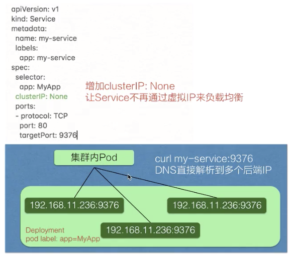
可以从上图看一下跟刚才我们声明的模板的区别，就是在中间加了一个 clusterIP:None，即表明不需要虚拟 IP。实际效果就是集群的 pod 访问 my-service 时，会直接解析到所有的 service 对应 pod 的 IP 地址，返回给 pod，然后 pod 里面自己去选择一个 IP 地址去直接访问。
向集群外暴露 Service
前面介绍的都是在集群里面 node 或者 pod 去访问 service，service 怎么去向外暴露呢？怎么把应用实际暴露给公网去访问呢？这里 service 也有两种类型去解决这个问题，一个是 NodePort，一个是 LoadBalancer。
-
NodePort 的方式就是在集群的 node 上面（即集群的节点的宿主机上面）去暴露节点上的一个端口，这样相当于在节点的一个端口上面访问到之后就会再去做一层转发，转发到虚拟的 IP 地址上面，就是刚刚宿主机上面 service 虚拟 IP 地址。
-
LoadBalancer 类型就是在 NodePort 上面又做了一层转换，刚才所说的 NodePort 其实是集群里面每个节点上面一个端口，LoadBalancer 是在所有的节点前又挂一个负载均衡。比如在阿里云上挂一个 SLB，这个负载均衡会提供一个统一的入口，并把所有它接触到的流量负载均衡到每一个集群节点的 node pod 上面去。然后 node pod 再转化成 ClusterIP，去访问到实际的 pod 上面。
操作演示
下面进行实际操作演示，在阿里云的容器服务上面进去体验一下如何使用 K8s Service。
创建 Service
我们已经创建好了一个阿里云的容器集群，然后并且配置好本地终端到阿里云容器集群的一个连接。
首先可以通过 kubectl get cs ，可以看到我们已经正常连接到了阿里云容器服务的集群上面去。
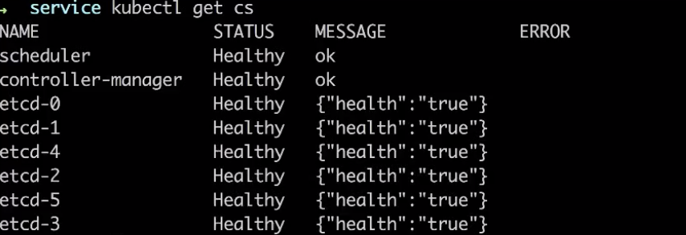
今天将通过这些模板实际去体验阿里云服务上面去使用 K8s Service。有三个模板，首先是 client，就是用来模拟通过 service 去访问 K8s 的 service，然后负载均衡到我们的 service 里面去声明的一组 pod 上。
K8s Service 的上面，跟刚才介绍一样，我们创建了一个 K8s Service 模板，里面 pod，K8s Service 会通过前端指定的 80 端口负载均衡到后端 pod 的 80 端口上面，然后 selector 选择到 run:nginx 这样标签的一些 pod 去作为它的后端。
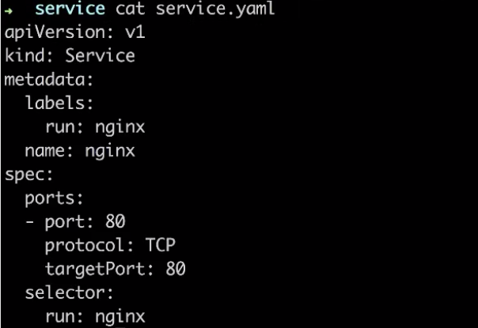
然后去创建带有这样标签的一组 pod，通过什么去创建 pod 呢？就是之前所介绍的 K8s deployment，通过 deployment 我们可以轻松创建出一组 pod，然后上面声明 run:nginx 这样一个label，并且它有两个副本，会同时跑出来两个 pod。
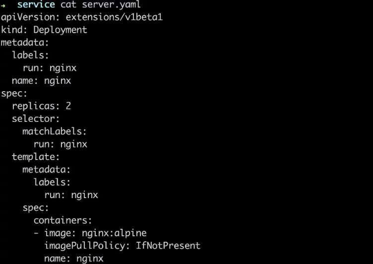
先创建一组 pod，就是创建这个 K8s deployment，通过 kubectl create -f service.yaml。这个 deployment 也创建好了，再看一下 pod 有没有创建出来。如下图看到这个 deployment 所创建的两个 pod 都已经在 running 了。通过 kubectl get pod -o wide 可以看到 IP 地址。通过 -l，即 label 去做筛选，run=nginx。如下图所示可以看到，这两个 pod 分别是 10.0.0.135 和 10.0.0.12 这样一个 IP 地址，并且都是带 run=nginx 这个 label 的。
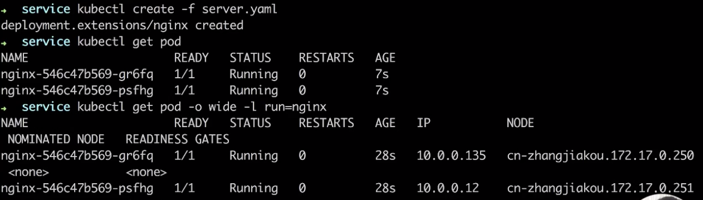
下面我们去创建 K8s service，就是刚才介绍的通过 service 去选择这两个 pod。这个 service 已经创建好了。
根据刚才介绍，通过 kubectl describe svc 可以看到这个 service 实际的一个状态。如下图所示，刚才创建的 nginx service，它的选择器是 run=nginx，通过 run=nginx 这个选择器选择到后端的 pod 地址，就是刚才所看到那两个 pod 的地址：10.0.0.12 和 10.0.0.135。这里可以看到 K8s 为它生成了集群里面一个虚拟 IP 地址，通过这个虚拟 IP 地址，它就可以负载均衡到后面的两个 pod 上面去。
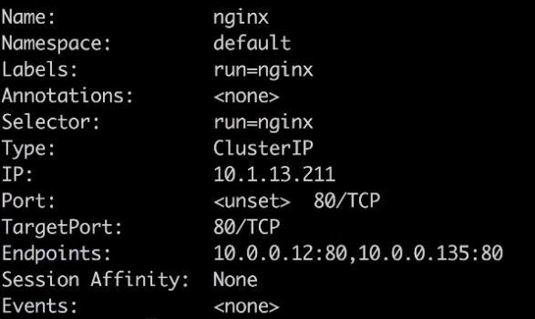
现在去创建一个客户端的 pod 实际去感受一下如何去访问这个 K8s Service，我们通过 client.yaml 去创建客户端的 pod，kubectl get pod 可以看到客户端 pod 已经创建好并且已经在运行中了。
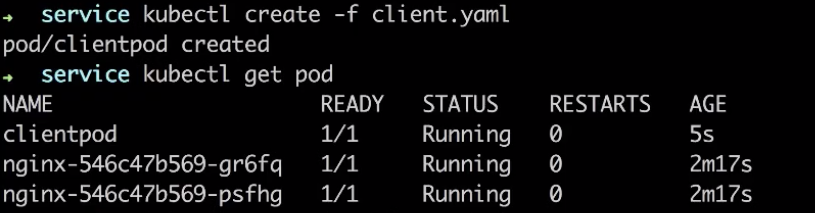
通过 kubectl exec 到这个 pod 里面，进入这个 pod 去感受一下刚才所说的三种访问方式，首先可以直接去访问这个 K8s 为它生成的这个 ClusterIP，就是虚拟 IP 地址，通过 curl 访问这个 IP 地址，这个 pod 里面没有装 curl。通过 wget 这个 IP 地址，输入进去测试一下。可以看到通过这个去访问到实际的 IP 地址是可以访问到后端的 nginx 上面的，这个虚拟是一个统一的入口。
第二种方式，可以通过直接 service 名字的方式去访问到这个 service。同样通过 wget，访问我们刚才所创建的 service 名 nginx，可以发现跟刚才看到的结果是一样的。
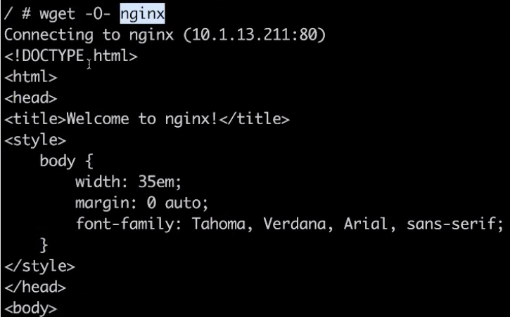
在不同的 namespace 时，也可以通过加上 namespace 的一个名字去访问到 service，比如这里的 namespace 为 default。 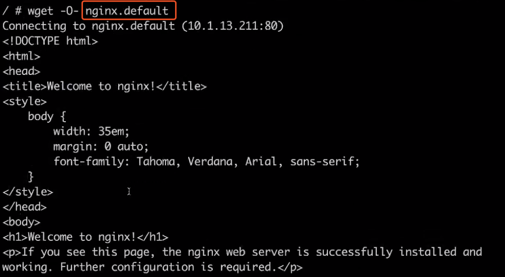
最后我们介绍的访问方式里面还可以通过环境变量去访问，在这个 pod 里面直接通过执行 env 命令看一下它实际注入的环境变量的情况。看一下 nginx 的 service 的各种配置已经注册进来了。
可以通过 wget 同样去访问这样一个环境变量，然后可以访问到我们的一个 service。
介绍完这三种访问方式，再看一下如何通过 service 外部的网络去访问。我们 vim 直接修改一些刚才所创建的 service。
最后我们添加一个 type，就是 LoadBalancer，就是我们前面所介绍的外部访问的方式。
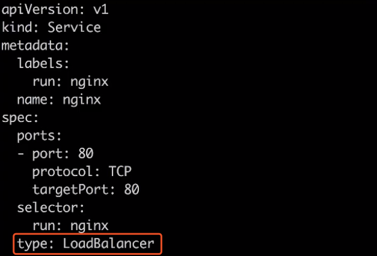
然后通过 kubectl apply，这样就把刚刚修改的内容直接生效在所创建的 service 里面。
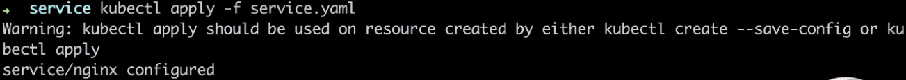
现在看一下 service 会有哪些变化呢？通过 kubectl get svc -o wide，我们发现刚刚创建的 nginx service 多了一个 EXTERNAL-IP，就是外部访问的一个 IP 地址，刚才我们所访问的都是 CLUSTER-IP，就是在集群里面的一个虚拟 IP 地址。
然后现在实际去访问一下这个外部 IP 地址 39.98.21.187，感受一下如何通过 service 去暴露我们的应用服务，直接在终端里面点一下，这里可以看到我们直接通过这个应用的外部访问端点，可以访问到这个 service，是不是很简单？
我们最后再看一下用 service 去实现了 K8s 的服务发现，就是 service 的访问地址跟 pod 的生命周期没有关系。我们先看一下现在的 service 后面选择的是这两个 pod IP 地址。
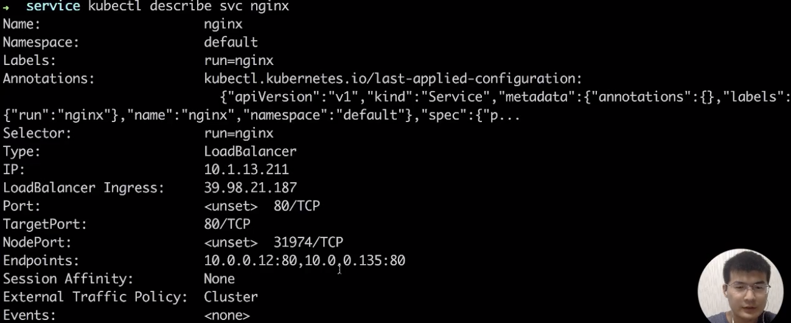
我们现在把其中的一个 pod 删掉，通过 kubectl delete 的方式把前面一个 pod 删掉。
我们知道 deployment 会让它自动生成一个新的 pod，现在看 IP 地址已经变成 137。
现在再去 describe 一下刚才的 service，如下图,看到前面访问端点就是集群的 IP 地址没有发生变化，对外的 LoadBalancer 的 IP 地址也没有发生变化。在所有不影响客户端的访问情况下，后端的一个 pod IP 已经自动放到了 service 后端里面。
这样就相当于在应用的组件调用的时候可以不用关心 pod 在生命周期的一个变化。
以上就是所有演示。
架构设计
** **最后是对 K8s 设计的一个简单的分析以及实现的一些原理。
Kubernetes 服务发现架构
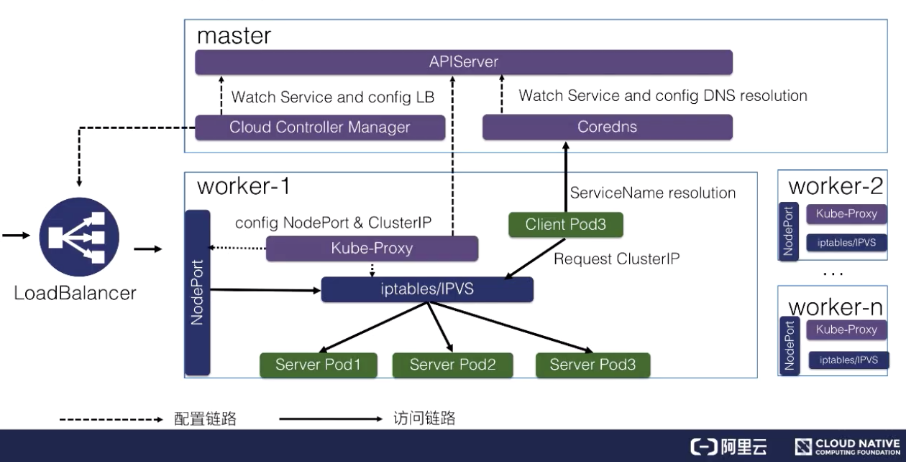
如上图所示，K8s 服务发现以及 K8s Service 是这样整体的一个架构。
K8s 分为 master 节点和 worker 节点：
- master 里面主要是 K8s 管控的内容；
- worker 节点里面是实际跑用户应用的一个地方。
在 K8s master 节点里面有 APIServer，就是统一管理 K8s 所有对象的地方，所有的组件都会注册到 APIServer 上面去监听这个对象的变化，比如说我们刚才的组件 pod 生命周期发生变化，这些事件。
这里面最关键的有三个组件：
- 一个是 Cloud Controller Manager，负责去配置 LoadBalancer 的一个负载均衡器给外部去访问；
- 另外一个就是 Coredns，就是通过 Coredns 去观测 APIServer 里面的 service 后端 pod 的一个变化，去配置 service 的 DNS 解析，实现可以通过 service 的名字直接访问到 service 的虚拟 IP，或者是 Headless 类型的 Service 中的 IP 列表的解析；
- 然后在每个 node 里面会有 kube-proxy 这个组件，它通过监听 service 以及 pod 变化，然后实际去配置集群里面的 node pod 或者是虚拟 IP 地址的一个访问。
实际访问链路是什么样的呢？比如说从集群内部的一个 Client Pod3 去访问 Service，就类似于刚才所演示的一个效果。Client Pod3 首先通过 Coredns 这里去解析出 ServiceIP，Coredns 会返回给它 ServiceName 所对应的 service IP 是什么，这个 Client Pod3 就会拿这个 Service IP 去做请求，它的请求到宿主机的网络之后，就会被 kube-proxy 所配置的 iptables 或者 IPVS 去做一层拦截处理，之后去负载均衡到每一个实际的后端 pod 上面去，这样就实现了一个负载均衡以及服务发现。
对于外部的流量，比如说刚才通过公网访问的一个请求。它是通过外部的一个负载均衡器 Cloud Controller Manager 去监听 service 的变化之后，去配置的一个负载均衡器，然后转发到节点上的一个 NodePort 上面去，NodePort 也会经过 kube-proxy 的一个配置的一个 iptables，把 NodePort 的流量转换成 ClusterIP，紧接着转换成后端的一个 pod 的 IP 地址，去做负载均衡以及服务发现。这就是整个 K8s 服务发现以及 K8s Service 整体的结构。
后续进阶
后续再进阶部分我们还会更加深入地去讲解 K8s Service 的实现原理，以及在 service 网络出问题之后，如何去诊断以及去修复的技巧。
本节总结
本节课的主要内容就到此为止了，这里为大家简单总结一下：
- 为什么云原生的场景需要服务发现和负载均衡，
- 在 Kubernetes 中如何使用 Kubernetes 的 Service 做服务发现和负载均衡
- Kubernetes 集群中 Service 涉及到的组件和大概实现原理
相信经过这一节的学习大家能够通过 Kubernetes Service 将复杂的企业级应用快速并标准的编排起来。